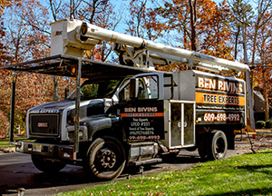

Summer has just started, but it seems like it’s in full swing in Monmouth County. During these hot and dry months, it’s essential to ensure the health and vitality of your trees. The warm weather, coupled with increased sunlight, can significantly impact your trees, making summer tree care a priority. For newly planted trees, this season is critical as they establish roots and adapt to their new environment. Proper watering, mulching, and protection from pests are vital steps to support their growth. Meanwhile, established trees also require attention to thrive through the summer months. Regular inspections from Monmouth County tree service professionals for signs of stress, appropriate pruning, and ensuring adequate hydration are key practices to maintain their strength and beauty. By following these summer tree care tips, you can ensure your trees remain healthy and robust, providing shade and enhancing the aesthetic appeal of your property throughout the season.
What to Do for Young Trees in Summer
Caring for a sapling correctly is crucial for several reasons. Proper care ensures that the tree develops a strong and healthy root system. This is essential for the tree’s stability and ability to absorb water and nutrients from the soil. Furthermore, the first few years of a tree’s life are critical for its long-term health and growth. Providing the right conditions during this period helps the sapling grow into a robust tree. Healthy saplings are better equipped to resist diseases and pests. Early care, including proper watering, mulching, and monitoring, helps prevent infestations and infections that can stunt growth or even kill young trees. By giving saplings the care they need, homeowners can ensure their trees develop into healthy, mature specimens that contribute to the landscape’s beauty and ecological health.
For saplings and newly planted trees, homeowners should follow these care tips to ensure healthy growth throughout summer:
- Watering: Water young trees deeply and consistently, especially during dry spells. Aim for 1-2 inches of water per week.
- Mulching: Apply a 2-3 inch layer of mulch around the base, keeping it away from the trunk to retain moisture and reduce weeds.
- Staking: Stake the tree if necessary to provide support against strong winds, ensuring the ties are loose enough to allow some movement.
- Protection: Use tree guards or protective wraps to shield the trunk from sunscald, pests, and lawn equipment.
- Fertilizing: Avoid heavy fertilization in the first year. If needed, use a balanced, slow-release fertilizer sparingly.
- Pruning: Only prune dead or damaged branches to avoid stressing the tree. Save structural pruning for the dormant season.
- Weed Control: Keep the area around the tree free of weeds and grass, which can compete for nutrients and water.
- Monitoring: Regularly check for signs of pests, diseases, or stress and address any issues promptly.
Recommendations from Monmouth County Tree Service Pros for Mature Trees
Proper summer care for mature trees involves several key Monmouth County tree service practices to ensure their health and vitality through the hot and dry months. Here are some essential tips:
Watering
- Deep Watering: Mature trees need deep watering during dry periods to ensure the roots get adequate moisture. Water deeply at the drip line rather than near the trunk.
- Frequency: Water mature trees once a week during prolonged dry spells. Adjust based on rainfall and soil moisture.
Mulching
- Mulch Layer: Apply a 2-4 inch layer of mulch around the base of the tree to retain soil moisture, regulate soil temperature, and reduce weed competition.
- Proper Placement: Keep mulch a few inches away from the trunk to prevent rot and pest issues.
Pruning
- Minimal Pruning: Avoid heavy pruning during summer. Focus on removing dead, damaged, or diseased branches.
- Proper Techniques: Use proper pruning techniques to maintain the tree’s structure and health. Hire a certified arborist for significant pruning needs.
Inspections
- Regular Checks: Inspect trees regularly for signs of stress, disease, or pest infestations.
- Address Issues Promptly: Early detection and treatment of issues can prevent more significant problems later.
Fertilizing
- Balanced Nutrition: Mature trees generally need less fertilization, but a slow-release, balanced fertilizer can be applied if nutrient deficiencies are evident.
- Soil Testing: Conduct a soil test to determine specific nutrient needs before fertilizing.
Pest and Disease Management
- Monitoring: Keep an eye out for common pests and diseases. Look for unusual changes in foliage, bark, or overall tree appearance.
- Integrated Pest Management: Use integrated pest management (IPM) strategies to control pests and diseases, including biological controls and safe chemical treatments if necessary.
Protection from Stress
- Avoid Compaction: Prevent soil compaction around the tree roots by minimizing foot traffic and construction activities.
- Guard Against Physical Damage: Protect trees from lawn equipment damage by using guards or creating a buffer zone around the trunk.
Structural Support
- Cabling and Bracing: For mature trees with weak branches or heavy limbs, consider professional cabling and bracing to provide additional support.
By following these summer care practices, homeowners can ensure their mature trees remain healthy, resilient, and beautiful, providing shade and enhancing the landscape’s aesthetic appeal.
Contact Us Today for Monmouth County Tree Service

Caring for your trees during the summer in Monmouth County is vital to maintaining their health and beauty. With proper watering, mulching, and regular inspections, both newly planted saplings and mature trees can thrive in the summer heat. By following the tips outlined in this blog, you can ensure your trees remain resilient against pests, diseases, and environmental stress. Investing time and effort into tree care not only enhances the aesthetic appeal of your property but also contributes to the local ecosystem by providing shade, cleaner air, and habitats for wildlife. Anytime you need assistance with Monmouth County tree service, contact Ben Bivins Tree Experts.